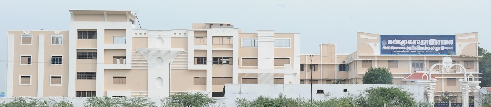

TIRUVANNAMALAI
Shanmuga Industries Arts and Science College

The college was established in 1995 with the aim of providing quality education to students from rural and
urban backgrounds in the region.
It is affiliated with Thiruvalluvar University, which is a well-known university in Tamil Nadu.
Undergraduate (UG) and Postgraduate (PG) programs in various fields, including Arts, Science, Commerce,
Engineering, and Management.
Popular programs include B.Sc., B.Com., B.A., M.Sc., M.Com., M.A., and various engineering degrees.
The campus has modern facilities such as well-equipped laboratories, libraries, and computer centers.
It also provides sports facilities, a seminar hall, and hostel accommodations for both boys and girls.